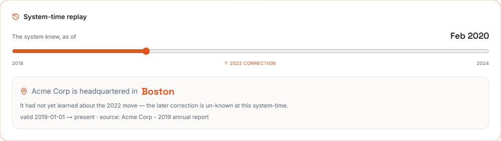
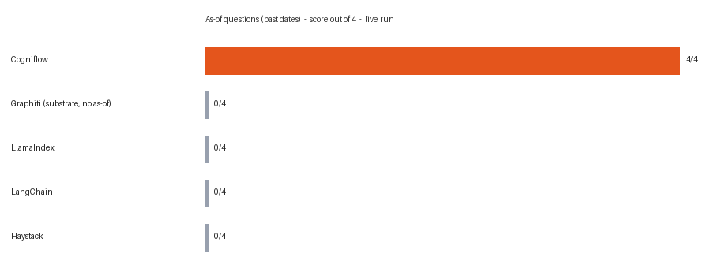
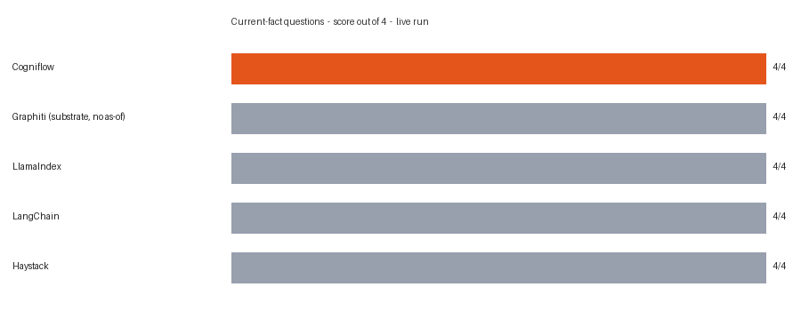

The bi-temporal RAG platform. Cited, temporally-correct answers plus the one capability the rest of the field lacks: replay what the system believed at any past moment, without leaking later corrections into the past.
Acme Corp's HQ was Boston (2019 filing), then Denver (2022 filing). Every RAG answers the first row. Only a bi-temporal system answers the third.
| Question | Vector RAG | Valid-time RAG | Cogniflow |
|---|---|---|---|
| Where is Acme HQ now? | Denver | Denver | Denver |
| Where was it in 2020? | no | Boston | Boston |
| What did we believe in 2021, before the correction? | no | no | Boston, Denver un-known |
| Timeline and provenance | no | partial | full audit |
The system-time scrubber, driven by the live replay engine. Drag past the 2022 correction and the belief flips; before it, the correction is correctly un-known.

Live, reproducible runs on a fictional corpus (no model can answer from training), with a content hash on every published result. Standard questions are an honest tie; as-of questions are the measured difference.


git clone https://github.com/Nagendhra-web/cogniflow && cd cogniflow docker compose up -d --build bash scripts/demo.sh